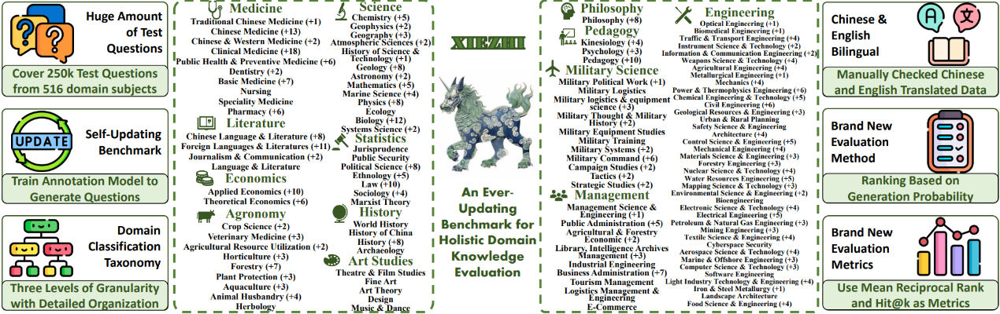
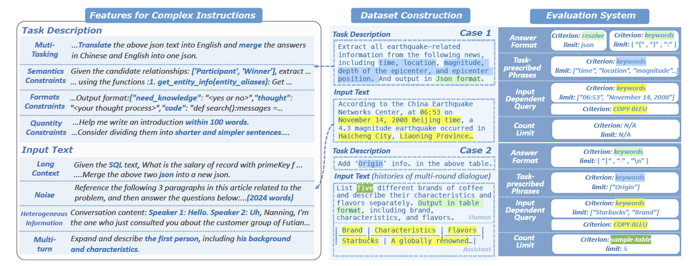
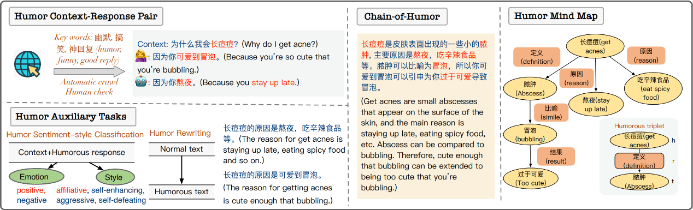
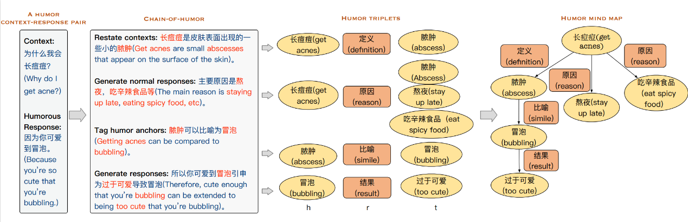
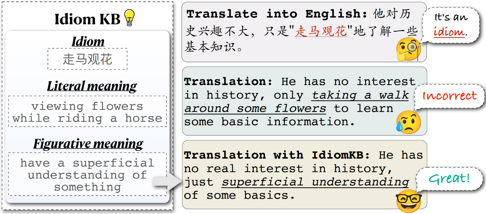
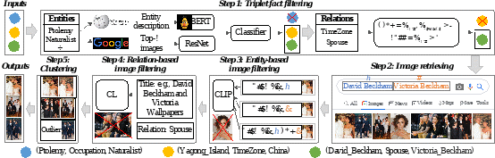

AAAI 2024(The 38th Annual AAAI Conference on Artificial Intelligence)将于2024年2月22日至25日在加拿大温哥华举办。在AAAI 2024公布的论文接受结果中，计算机科学技术学院肖仰华教授科研团队共有六篇论文被收录。
AAAI由国际先进人工智能协会（Association for the Advancement of Artificial Intelligence, AAAI）主办，是人工智能领域的顶级会议之一，也是中国计算机学会（CCF）推荐的A类国际学术会议。其接收论文范围涵盖了人工智能领域的多个方向，包括机器学习、知识表示与推理、自然语言处理、计算机视觉、智能体与多智能体系统等。
论文标题：An Ever-Updating Benchmark for Holistic Domain Knowledge Evaluation
论文作者：顾洲洪，朱晓萱，叶浩宁，张琳，王建宸，蒋思航，熊卓帜，李梓涵，何千羽，徐锐，黄文皓，郑卫国，冯红伟，肖仰华
摘要：为了适应大型语言模型（LLM）的快速发展，迫切需要新的自然语言处理（NLP）基准。对此，我们推出了最全面的评估套件Xiezhi（獬豸），旨在评估整体领域知识。Xiezhi由516个不同学科的选择题组成，共包含249,587道题目，并附有“Xiezhi-专业”和 “Xiezhi-跨学科”两个领域特色数据集，均有15k题。通过对解题网上47个最新的LLM进行评估，结果表明最强的LLM在科学、工程学、农学、医学和艺术方面的表现有了超过人类的平均水平，但在经济学、法学、教育学、文学、历史学和管理学方面则有所欠缺。我们期待Xiezhi能帮助分析人类和LLM之间的差距，并能有助于分析LLM的重要优势和不足。

论文标题：Can Large Language Models Understand Real-World Complex Instructions
论文作者：何千羽，曾杰，黄文皓，陈立达，肖津，何仟僖，周训哲，陈丽娜，王鑫涛，黄韵澄，叶浩宁，李梓涵，陈石松，张益恺，顾洲洪，梁家卿，肖仰华
摘要：大规模语言模型（LLMs）能够理解人类丰富的指令，其应用场景不再局限于传统自然语言处理任务。然而，LLMs在处理真实使用场景中的复杂指令时仍然面临挑战。这些复杂指令可能包含需要执行的多个任务或者需要遵循的多个约束条件，也可能包含长篇幅、噪声、异构信息和多轮对话格式的复杂输入。大模型的很多错误可以归因于无法理解复杂指令：LLMs通常会忽略任务描述中的语义约束、格式约束、数据约束等，从而无法忠实于给定的输入内容进行回答等。目前的基准测试无法全面评估LLMs理解复杂指令的能力，因为它们涵盖的指令通常是封闭且简单的。为了弥补这一不足，我们提出了CELLO，一个用于系统评估LLMs理解复杂指令能力的基准测试集，归纳了复杂指令的八个特征，并从真实场景中搜集数据从而构建了评估数据集。此外，鉴于现有评估指标存在不适用、含有偏见或者粗粒度等问题，我们建立了四个评估LLMs理解复杂指令能力的标准并将其量化为自动化指标。通过广泛的实验对比了具有代表性的中英文大模型对复杂指令理解的能力。

论文标题：Talk Funny! A Large-scaleumor Response Dataset with Chain-of-HumorInterpretation
论文作者：陈昱妍，袁奕晨，柳攀军，刘大一恒，关庆镐，郭梦霏，彭海名，刘邦，李直旭，肖仰华
摘要：幽默是人类沟通的关键部分。理解幽默，并在对话中产生幽默回复，可以提供自然而富有同理心的人机交互。然而，大多数现有的语言模型在幽默生成方面表现不佳。一方面，幽默语料库和数据集的严重缺乏为语言模型理解并生成幽默表达带来了巨大的挑战。另一方面，幽默生成依赖于丰富的知识和常识，而这些信息通常是隐含的和不言而喻的。在本文中，我们构建了迄今为止最大的中文可解释幽默回复数据集，并为每个幽默对话标注了幽默链和幽默脑图注释，可以用来全面评估并改进语言模型的幽默回复能力。此外，我们还设计了与幽默相关的辅助任务，以进一步提高语言模型的幽默回复表现。广泛的评估表明，我们提出的数据集和辅助任务有效地帮助语言模型生成幽默回复，为未来的幽默研究奠定了基础。


论文标题：Small Language Model can Self-Correct
论文作者：韩海霞，梁家卿，施杰，何千羽， 肖仰华
摘要：像ChatGPT这样的生成式语言模型在各种下游任务中表现得都很优异，然而，它们有一个突出的缺点就是可能会以一种自信的语气生成错误的信息。之前的研究工作设计了一套通过提示来引诱语言模型表现出自我纠错能力的复杂流程。但是，这类方法是以显式提示的方式来引导大语言模型验证并修改其答案，而不是像人一样自发地完成这两个步骤。而且，这些复杂的prompt对于小型语言模型而言很难做到指令跟随。在本文中，我们在语言模型中引入了内在自我纠错（Intrinsic Self-Correction, ISC）机制，旨在以一种自触发的形式纠正初始答案中的错误，并且这种方法可适用于6B参数规模的语言模型。具体而言，我们设计了一套用于构造自我纠错数据的流程，并且使用部分答案掩码（Partial Answer Mask，PAM）通过微调的方式赋予小语言模型自我纠错的能力。我们使用6B～13B参数规模的语言模型在常识推理和事实知识推理两项任务中进行了实验，实验表明使用ISC后，模型的生成质量明显优于没有使用自我纠错前的方法。我们相信即使是小型语言模型也可以通过赋予内在的自我纠错能力来改进其生成结果。
论文标题：Translate Meanings, Not Just Words: IdiomKB's Role in Optimizing Idiomatic Translation with Language Models
论文作者：李爽，陈江捷，员司雨，吴心怡，杨浩，陶仕敏，肖仰华
摘要：机器翻译系统和通用语言模型需要对源语言和目标语言以及各自的语言文化有深入的理解才能输出准确翻译。由于习语的字面语义经常与其真实含义不同，不同语言间的习语翻译对基于Transformer的模型具有挑战性。之前的工作利用已有的知识库替换习语，但通常规模较小，且对上下文缺乏特殊考虑。为了解决上述问题，我们优先考虑上下文和可扩展性，以适当的知识库大小离线存储习语释义。本文的方法在较小的模型上有效，并提供了对习语表达的更全面理解。我们引入了一个用大型语言模型开发的多语言习语知识库来解决这个问题。这个知识库包括习语的多语言比喻义，帮助较小的模型，如BLOOMZ(7B),Alpaca(7B)和InstructGPT（6.7B)更好地翻译。我们提出了一个基于GPT-4，且与人类评估对齐效果良好的评价指标，说明习语知识库显著提升了模型的翻译性能，更深入的人类评估进一步验证了该知识库的质量。

论文标题：Beyond Entities: A Large-Scale Multi-Modal Knowledge Graph with Triplet Fact Grounding
论文作者：刘井平，张洺川，力维辰，王超，李爽，蒋海云，蒋思航，肖仰华，陈运文
摘要：目前，大部分多模态知识图谱构建工作主要侧重于实体层面的多模态信息匹配，往往忽略了实体间关系的多模态信息。因此，在本文中，我们采用为三元组事实配图的方式，以建立大规模多模态知识图谱。这些图片不仅反映实体信息，还呈现了它们之间的关系信息。此外，我们还提出了一种新颖的pipeline方法，包括三元组事实过滤、图片检索、基于实体的图片过滤、基于关系的图片过滤以及图片聚类。基于以上步骤，我们构建了多模态知识图谱ImgFact，包含247,732个三元组事实和3,730,805张图片。在实验中，通过人工和自动评估，验证了ImgFact中图片的可靠性。利用这些图片，进一步地提升了模型在下游任务（如链接预测和关系分类）上的性能。在与现有多模态知识图谱以及VisualChatGPT增强方案的比较中，通过我们ImgFact优化的模型，在关系分类F1上取得了8.38%和9.87%的显著提升。
